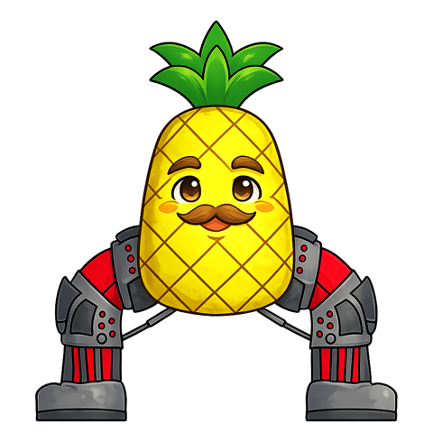
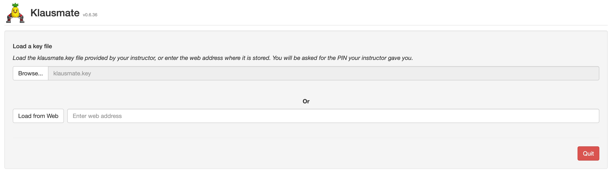
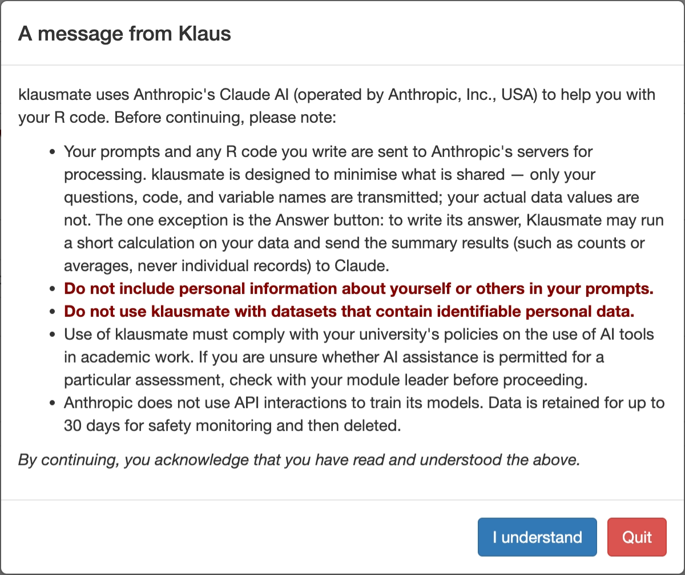

Klausmate
An introduction
1 Chapter 1: Setting up Klausmate
1.1 Summary

1.2 Who is Klaus?
Think of Klaus as a classroom assistant who helps you write code blocks in RStudio. Their goal is to help you learn, not to replace you learning.
Klausmate is based on the idea that learning to code remains useful in an age of AI—perhaps more so. In any written or spoken language, AI could do the translation for you. However, knowing a little about the language helps you become more proficient and prevents unintended errors. A good tutor does not speak for you but helps you grow in confidence when speaking and writing. This is where Klaus comes in.
This is a developmental version of Klausmate, exploring how AI can support teaching with R. It is a ‘proof-of-concept’ not a final package. It is updated regularly and will contain bugs and glitches. What you see on screen may differ from the screenshots in this manual.
1.3 Installing Klausmate
To use Klausmate you must have first installed R (the programming language) and—after R has been installed—RStudio){target=“_blank”} (a Development Environment for R). Once those are ready then open RStudio and, in the Console, enter the following:
if (!requireNamespace("remotes", quietly = TRUE))
install.packages("remotes")
remotes::install_github("profrichharris/klausmate")This will install Klausmate on your computer. It requires an active Internet connection to work.
Installing Klausmate means it is ready for use. But you will need to load it each time you restart R (library(klausmate)—see below).
The Klausmate installation may fail if other packages are missing from your computer and Klausmate is unable to install them. If this happens, you will need to install those ‘extra’ packages manually.
1.4 Running Klausmate for the first time
Step 1: Load the library
To run Klausmate for the first time, load the library and call to Klaus:
library(klausmate)
klaus()Step 2: Activate the key file
To talk with Klaus you need a key file. Your (human) instructor will provide this. Please upload the file or enter its web address and enter the PIN.

Step 3: Wait whilst Klausmate is prepared for use
After the key file has been verified, Klausmate will check whether its required packages are available. If not, it will try to install them.
After the key file has been verified, you may need to wait whilst Klausmate prepares itself for first use. Please be patient. This is a one-time process on your computer.
Step 4: Read the important message
Before you can use Klausmate an important message will appear that you must read carefully and acknowledge. Please pay particular attention to not using Klausmate with personal data and to making sure how you use Klausmate is allowed within the university’s policies on the use of AI tools in academic work, especially in regard to assessment. If you have any doubts, please ask your instructor.
After you have made the acknowledgment, Klausmate is ready for use.

1.5 What is the key file for?
Klausmate is free to install but it is not free to use. The cost arises from the use of AI—Klausmate is conversational and works through Claude. Interacting with Claude through prompts incurs a fee. This cost has been ‘prepaid’ for you but to limit the total expenditure (as well as your reliance on Klaus), the amount is capped. Your quota is unlocked by the key file.
The key file sets limits on how much you can use Klausmate, how regularly your quota is topped-up—if at all—and when the key file expires.
1.6 How ethical is it to use AI?
AI raises many socio-economic, political and environmental concerns. Some academic staff (and others) have called for it to be boycotted all or most of the time.
Klausmate is as an experiment. It is an approach we could use for teaching, not an assertion that we should use it for teaching. You are encouraged to read this document and approach AI as you should quantitative methods and data analysis generally—in a reflexive and critical manner.1
You must never use AI in a way that contravenes university regulations. Be especially careful not to break rules regarding assessment—when, and how, AI is permitted, if at all. If in doubt, ask.
1.7 Please provide feedback
After you have spent some time using Klausmate please provide feedback at Feedback on Klausmate – Fill in form. It will help guide any future development and use in teaching. Thank you.

Harris, Richard, GeoAI, Geography and Society: Navigating the Future Past (September 29, 2026). Available at http://dx.doi.org/10.2139/ssrn.7539623↩︎